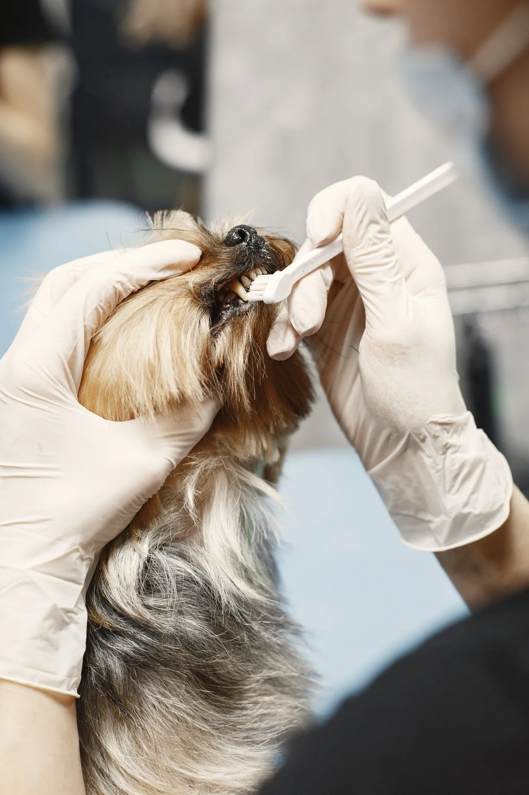

Vệ sinh răng miệng cho chó mèo tại nhà
Tác giả: Ruler
Nhiều người mới nuôi chó mèo chỉ để ý tới chuyện ăn uống, tắm rửa hay tiêm phòng, mà quên mất một việc nhỏ nhưng diễn ra hằng ngày: răng miệng của thú cưng. Một chú chó hay chú mèo có thể vẫn ăn uống bình thường, vẫn chạy nhảy vui vẻ, nhưng bên trong miệng đã bắt đầu có mảng bám, cao răng và nướu sưng đỏ. Đến khi chủ nuôi phát hiện ra vì hơi thở hôi nặng, răng lung lay hay thú cưng bỏ ăn vì đau miệng thì việc chăm sóc đã muộn hơn rất nhiều, và thường phải nhờ tới bác sĩ thú y can thiệp.
Bài viết này hướng dẫn cách vệ sinh răng miệng cho chó mèo tại nhà theo những điểm chính mà Hiệp hội Thú y Hoa Kỳ (AVMA) và Hiệp hội Phòng chống Ngược đãi Động vật Hoa Kỳ (ASPCA) đã công bố. Bài viết chỉ mang tính tham khảo chung, không thay thế việc khám trực tiếp của bác sĩ thú y. Nếu thú cưng của bạn đã có dấu hiệu đau miệng, chảy máu hay răng lung lay, hãy đưa tới phòng khám thú y thay vì tự xử lý tại nhà.
Vì sao răng miệng lại quan trọng
Theo AVMA, sức khỏe răng miệng là một phần rất quan trọng của sức khỏe tổng thể của thú cưng, và các vấn đề về răng miệng có thể gây ra hoặc bị gây ra bởi những vấn đề sức khỏe khác. Nói cách khác, miệng không phải là một bộ phận tách rời. Một cái miệng đau có thể khiến thú cưng ăn ít đi, ngủ không yên, trở nên cáu kỉnh, và ngược lại, một số bệnh toàn thân cũng có thể biểu hiện qua miệng.
Điều khiến nhiều chủ nuôi bất ngờ là bệnh răng miệng ở chó mèo thường tiến triển âm thầm. Thú cưng không biết nói rằng mình đau răng. Chúng vẫn cố ăn, chỉ là ăn chậm hơn, nhai một bên nhiều hơn, hoặc bỏ lại những hạt thức ăn cứng. Nhiều con vẫn chơi đùa như thường, chỉ là ít dùng miệng để tha đồ chơi hơn trước. Vì vậy, việc chờ tới khi thấy rõ triệu chứng mới bắt đầu chăm sóc răng miệng thường là đã muộn. Cách làm đúng là kiểm tra miệng định kỳ và tập thói quen vệ sinh từ khi thú cưng còn khỏe, còn chịu hợp tác.
AVMA cũng nêu rõ rằng răng và nướu của thú cưng nên được bác sĩ thú y kiểm tra ít nhất một lần mỗi năm để phát hiện sớm dấu hiệu có vấn đề và giữ cho miệng khỏe mạnh. Lần kiểm tra này thường gắn với lần khám sức khỏe định kỳ hằng năm mà Bài 5 đã nói tới. Khi đưa thú cưng đi khám, bạn có thể nhờ bác sĩ xem miệng, đánh giá mức độ mảng bám và cao răng, và tư vấn xem việc chải răng tại nhà có phù hợp với con vật của bạn hay không. Với thú cưng đã có bệnh nền, thú cưng già hay thú cưng đang mang thai, bác sĩ sẽ là người quyết định lịch kiểm tra phù hợp hơn, bài viết này không đưa ra lịch riêng cho những trường hợp đó.
Một điểm nữa cần nói rõ ngay từ đầu: vệ sinh tại nhà là việc duy trì, không phải là việc điều trị. Chải răng, lau nướu hay cho gặm đồ chơi nhai không thể thay thế việc làm sạch răng chuyên nghiệp khi bác sĩ đã chỉ định. Bài viết này giúp bạn làm tốt phần duy trì hằng ngày và nhận ra sớm khi nào cần đưa thú cưng đi khám.
Những dấu hiệu cần đi khám sớm hơn lịch hẹn
AVMA liệt kê những dấu hiệu mà khi thấy, chủ nuôi nên đưa thú cưng đi kiểm tra răng sớm hơn, thay vì đợi tới lần khám định kỳ:
- Hôi miệng, đặc biệt là mùi hôi khác hẳn hơi thở bình thường của thú cưng.
- Răng gãy hoặc răng lung lay.
- Răng thừa hoặc răng sữa còn lại, chưa rụng đúng lúc.
- Răng đổi màu hoặc bị phủ cao răng.
- Nhai bất thường, chảy dãi nhiều, hoặc làm rơi thức ăn ra khỏi miệng khi đang ăn.
- Ăn ít đi, chán ăn hoặc từ chối ăn.
- Đau ở trong hoặc quanh miệng, ví dụ thú cưng kêu lên hoặc giật mình khi bạn chạm vào vùng miệng.
- Chảy máu từ miệng.
- Sưng ở vùng quanh miệng.
AVMA cũng lưu ý rằng một số thú cưng trở nên cáu kỉnh khi có vấn đề về răng miệng, và bất kỳ thay đổi nào trong hành vi cũng là lý do nên đi khám bác sĩ thú y. Khi kiểm tra miệng thú cưng, bạn cần cẩn thận, vì một con vật đang đau miệng có thể cắn. Đừng cố mở miệng thú cưng bằng sức mạnh, đừng giữ chặt đầu nó, và đừng đưa tay sâu vào miệng khi nó đang tỏ ra khó chịu.
Hướng dẫn của ASPCA, được đăng lại trên trang của Phòng khám Thú y Aston, bổ sung thêm những dấu hiệu cụ thể cần chú ý. Với chó, những dấu hiệu có thể cho thấy miệng đang có vấn đề gồm: hôi miệng, chảy dãi nhiều, nướu viêm, u ở nướu, nang dưới lưỡi và răng lung lay. Với mèo, cần chú ý: viền đỏ sẫm dọc theo nướu, nướu đỏ và sưng, loét ở nướu hoặc lưỡi, răng lung lay, có mủ, khó nhai thức ăn, chảy dãi nhiều, hay cào vào vùng miệng. Nếu thấy bất kỳ dấu hiệu nào trong số này, bạn nên đưa thú cưng đi khám thú y ngay, thay vì tiếp tục chải răng tại nhà như bình thường.
Một lưu ý quan trọng khác từ hướng dẫn của ASPCA: nếu nướu của mèo có dấu hiệu viêm, bạn nên đưa mèo đi khám thú y. Nếu không được điều trị, bệnh nướu có thể tiến triển, dẫn tới mất răng hoặc khiến mèo không ăn được. Tình trạng viêm trong miệng đôi khi còn có thể liên quan tới những vấn đề bên trong khác. Bài viết này không chẩn đoán những vấn đề đó, chỉ ghi lại để bạn biết khi nào cần nhờ bác sĩ thú y xem xét.
Kiểm tra miệng hằng tuần tại nhà
Trước khi nói tới chải răng, bạn cần có thói quen kiểm tra miệng. Việc này đơn giản, nhanh, và giúp bạn phát hiện sớm thay đổi. Hướng dẫn của ASPCA gợi ý kiểm tra theo hai bước nhỏ: ngửi hơi thở và nâng môi lên xem nướu và răng.
Bước thứ nhất là kiểm tra hơi thở. Bạn chỉ cần ngửi nhẹ hơi thở của thú cưng ở khoảng cách gần. Hơi thở bình thường của chó mèo không thơm như hoa, nhưng cũng không nên có mùi hôi khó chịu bất thường. Nếu hơi thở bỗng hôi nặng, kèm theo chán ăn, nôn, uống nước nhiều bất thường hoặc đi tiểu nhiều bất thường, bạn nên đưa thú cưng đi khám bác sĩ thú y. Với mèo cũng vậy: hơi thở của mèo không cần thơm, nhưng không nên có mùi hôi nặng bất thường. Nếu miệng mèo có mùi hôi mạnh bất thường, mèo có thể đang gặp vấn đề tiêu hóa hoặc bệnh nướu, và cần được bác sĩ thú y khám.
Bước thứ hai là kiểm tra nướu và răng, nên làm mỗi tuần một lần. Bạn để thú cưng đối diện với mình, nhẹ nhàng nâng môi của nó lên và nhìn vào nướu và răng. Nướu khỏe mạnh thường có màu hồng, không trắng bệch cũng không đỏ, và không có dấu hiệu sưng. Răng nên sạch, không có cao răng màu nâu. Với mèo, nướu nên chắc và hồng, không trắng hay đỏ, không sưng, răng sạch và không có cao răng màu nâu, không có răng lung lay hay răng gãy.
Bạn nên làm việc này khi thú cưng đang bình tĩnh, ví dụ sau khi chơi nhẹ hoặc sau bữa ăn một lúc, ở nơi yên tĩnh, không có người lạ hay tiếng ồn lớn. Nếu thú cưng quay mặt đi, gầm gừ, cào hay cắn, bạn nên dừng lại ngay và thử lại vào lúc khác, với cách tiếp cận chậm hơn. Đừng biến việc kiểm tra miệng thành một cuộc giằng co. Mục tiêu là để thú cưng quen dần với việc bạn chạm vào vùng miệng, chứ không phải ép nó phải chịu đựng.
Bảng dưới đây là khung kiểm tra hằng tuần mà bạn có thể tự dùng tại nhà. Bảng này do bài viết tự tổng hợp từ các dấu hiệu mà AVMA và ASPCA đã nêu, không phải bảng trích nguyên văn từ một nguồn nào.
| Hạng mục kiểm tra | Trông như thế nào là bình thường | Dấu hiệu cần đi khám thú y |
|---|---|---|
| Hơi thở | Không thơm nhưng không hôi nặng bất thường | Hôi nặng khác hẳn bình thường, kèm chán ăn hoặc nôn |
| Nướu | Màu hồng, không sưng | Trắng bệch, đỏ, sưng, có viền đỏ sẫm dọc nướu, có loét |
| Răng | Sạch, không có cao răng màu nâu | Đổi màu, phủ cao răng dày, gãy, lung lay, răng sữa còn lại |
| Ăn uống | Nhai bình thường, không làm rơi thức ăn | Nhai một bên, làm rơi thức ăn, chảy dãi, bỏ ăn |
| Hành vi quanh miệng | Để bạn chạm nhẹ vào môi, không kêu đau | Kêu lên khi chạm vào miệng, hay cào miệng, cáu kỉnh bất thường |
| Chảy máu, sưng | Không chảy máu, không sưng | Chảy máu từ miệng, sưng vùng quanh miệng |
Bạn có thể ghi lại kết quả kiểm tra vào cuốn sổ theo dõi sức khỏe hằng ngày mà Bài 5 đã gợi ý. Chỉ cần một dòng ngắn mỗi tuần, ví dụ "nướu hồng, răng sạch" hoặc "thấy cao răng ở răng hàm bên phải", cũng đủ để bạn và bác sĩ thú y thấy được thay đổi theo thời gian.
Chuẩn bị dụng cụ chải răng
Bạn không nên dùng bàn chải và kem đánh răng của người cho chó mèo. Hướng dẫn của ASPCA nêu rõ: hãy dùng bàn chải được làm riêng cho chó hoặc mèo, hoặc một miếng gạc sạch mềm quấn quanh ngón tay. Bạn có thể hỏi bác sĩ thú y về loại kem đánh răng dành riêng cho chó hoặc mèo, hoặc loại kem mà bác sĩ tin dùng. Tuyệt đối không dùng kem đánh răng của người, vì kem đánh răng của người có thể gây kích ứng dạ dày của chó, và một số loại còn chứa thành phần không an toàn cho thú cưng. Với mèo, hướng dẫn của ASPCA cũng nhấn mạnh: không dùng kem đánh răng dành cho người, vì các thành phần trong đó có thể gây hại cho mèo.
Với chó, bộ dụng cụ cơ bản gồm: một bàn chải dành riêng cho chó, nhỏ hơn bàn chải của người và có lông mềm hơn, hoặc một bàn chải đeo ngón tay, hoặc một miếng gạc sạch; một tuýp kem đánh răng dành cho chó. Với mèo, bạn cần bàn chải nhỏ dành riêng cho mèo, kem đánh răng dành cho mèo, và có thể chuẩn bị thêm tăm bông hoặc gạc mềm để làm quen trong những ngày đầu. Bạn nên hỏi bác sĩ thú y trước khi chọn dụng cụ nếu thú cưng của bạn đã có nướu viêm, vì việc chải quá mạnh khi nướu đang viêm có thể làm nó đau.
Một điểm cần lưu ý: hướng dẫn của ASPCA có nhắc tới việc có thể tự pha kem đánh răng từ muối nở và nước, hoặc dùng nước muối với mèo, nhưng bài viết này không khuyến khích bạn tự pha chế tại nhà khi chưa hỏi bác sĩ thú y. Thành phần, nồng độ và cách dùng của những hỗn hợp tự pha không được bài viết này kiểm chứng đầy đủ, và việc dùng sai có thể làm thú cưng khó chịu hoặc gây hại. Cách an toàn nhất là dùng sản phẩm dành riêng cho chó hoặc mèo, theo hướng dẫn trên bao bì và theo tư vấn của bác sĩ thú y.
Ngoài bàn chải và kem đánh răng, bạn có thể hỏi bác sĩ thú y về đồ chơi nhai và thức ăn giúp làm sạch răng. Hướng dẫn của ASPCA cho biết việc gặm đồ chơi nhai có thể giúp thỏa mãn nhu cầu gặm tự nhiên của chó, đồng thời mát-xa nướu và giúp giữ răng sạch bằng cách cạo đi mảng bám mềm. Bạn nên nhờ bác sĩ thú y gợi ý loại đồ chơi nhai an toàn, không độc, phù hợp với kích cỡ và thói quen nhai của thú cưng. Đừng cho thú cưng gặm xương cứng, đá hay đồ vật quá cứng vì có thể làm gãy răng.
Làm quen với việc chải răng: chậm mà chắc
Đây là phần quan trọng nhất, và cũng là phần nhiều người mới nuôi làm vội nhất. Nếu bạn cầm bàn chải chải ngay trong ngày đầu tiên, thú cưng rất dễ sợ, giãy giụa và từ đó ghét luôn việc chải răng. Hướng dẫn của ASPCA gợi ý một lộ trình làm quen kéo dài vài tuần, mỗi bước chỉ chuyển tiếp khi thú cưng đã thoải mái với bước trước.
Với chó, các bước làm quen như sau:
- Trước hết, bạn làm cho chó quen với ý tưởng được chạm vào miệng. Bạn dùng ngón tay xoa môi của chó theo chuyển động tròn trong khoảng 30 đến 60 giây, một hoặc hai lần mỗi ngày, trong vài tuần. Chỉ làm vậy thôi, chưa cần bàn chải hay kem đánh răng.
- Khi chó đã thoải mái khi bạn chạm vào môi và răng, bạn cho một ít kem đánh răng dành cho chó lên môi của nó để nó quen với vị kem. Bạn có thể để nó liếm thử từ ngón tay của bạn.
- Tiếp theo, bạn giới thiệu bàn chải dành riêng cho chó. Bàn chải này nhỏ hơn bàn chải của người và có lông mềm hơn. Bạn cũng có thể dùng bàn chải đeo ngón tay hoặc một miếng gạc sạch quấn quanh ngón tay để mát-xa nướu cho chó.
- Cuối cùng, bạn cho kem đánh răng lên răng của chó và chải nhẹ nhàng. Trước khi chải, bạn có thể nhờ bác sĩ thú y kiểm tra xem nướu của chó có bị viêm hay không, vì nếu chó bị viêm nướu nhẹ mà bạn chải quá mạnh, nó có thể bị đau.
Với mèo, lộ trình làm quen cần chậm hơn và nhẹ nhàng hơn, vì miệng mèo nhỏ hơn và mèo thường ít chịu đựng việc bị chạm vào miệng hơn chó. Hướng dẫn của ASPCA gợi ý:
- Bạn bắt đầu bằng cách nhẹ nhàng xoa nướu của mèo bằng ngón tay, hoặc chạm một que tăm bông vào nướu của nó. Bạn làm việc này trong vài buổi, mỗi buổi chỉ vài giây, khi mèo đang thư giãn.
- Sau vài buổi, bạn cho một ít kem đánh răng dành cho mèo lên môi của mèo để nó quen với vị kem. Nếu mèo từ chối một mùi vị, bạn có thể thử mùi vị khác.
- Tiếp theo, bạn giới thiệu bàn chải nhỏ dành riêng cho mèo. Bàn chải này nhỏ hơn bàn chải của người và có lông mềm hơn. Bạn cũng có thể dùng bàn chải đeo ngón tay để mát-xa nướu cho mèo.
- Cuối cùng, bạn cho kem đánh răng lên răng của mèo và chải nhẹ nhàng. Cũng như với chó, bạn nên nhờ bác sĩ thú y kiểm tra trước xem nướu của mèo có bị viêm hay không, vì nhiều mèo bị viêm nướu nhẹ và việc chải quá mạnh có thể làm nó đau.
Trong suốt quá trình làm quen, bạn nên kết thúc mỗi buổi bằng một điều dễ chịu, ví dụ lời khen nhẹ nhàng, một cái vuốt ve, hoặc một phần thưởng nhỏ mà thú cưng thích. Nếu thú cưng quay mặt đi, đông cứng người, giật lùi, gầm gừ hay có dấu hiệu sợ hãi, bạn nên dừng lại và quay về bước dễ hơn vào buổi sau. Đừng giữ chặt thú cưng, đừng phạt nó vì không chịu chải răng. Mục tiêu là để nó thấy việc chạm vào miệng là chuyện bình thường, không đáng sợ.
Kỹ thuật chải răng tại nhà
Khi thú cưng đã quen với bàn chải, bạn có thể bắt đầu chải răng thật. Hướng dẫn của ASPCA mô tả kỹ thuật như sau: bạn đặt bàn chải hoặc ngón tay quấn gạc ở góc 45 độ so với răng, và chải bằng những chuyển động tròn nhỏ. Bạn làm từng vùng miệng một, nâng môi lên khi cần. Mặt ngoài của răng, phía tiếp xúc với má, thường có nhiều cao răng nhất, và một cú chải xuống cuối cùng có thể giúp loại bỏ mảng bám ở đó. Nếu chó của bạn không chịu cho bạn chải mặt trong của răng, bạn đừng cố ép, vì chỉ có một lượng nhỏ cao răng tích tụ ở mặt trong.
Bạn nên tập trung vào mặt ngoài của răng, đặc biệt là những răng hàm phía sau, nơi mảng bám tích tụ nhiều nhất. Bạn không cần mở miệng thú cưng ra thật to. Bạn chỉ cần nâng môi lên nhẹ nhàng và chải mặt ngoài của răng khi miệng thú cưng gần như khép. Bạn chải nhẹ nhàng, không ấn mạnh, không chà xát qua lại như đang chà rửa. Nếu bạn thấy nướu chảy máu khi chải, bạn nên dừng lại và hỏi bác sĩ thú y, vì đó có thể là dấu hiệu nướu đang viêm.
Về tần suất, bài viết này ghi rõ theo đúng nguồn đã đọc: hướng dẫn của ASPCA, được đăng lại trên trang của Phòng khám Thú y Aston, gợi ý sau khi đã thành thạo kỹ thuật thì chải răng hai hoặc ba lần mỗi tuần. AVMA từng nêu trong hướng dẫn chăm sóc răng miệng cho thú cưng rằng việc chải răng thường xuyên là việc hiệu quả nhất mà bạn có thể làm tại nhà để giữ răng khỏe mạnh giữa các lần làm sạch chuyên nghiệp, và rằng răng của thú cưng nên được bác sĩ thú y kiểm tra ít nhất một lần mỗi năm. Câu này trích từ bản trước đây của trang AVMA Pet Dental Care — trang hiện tại đã rút gọn và không còn mục chải răng, nhưng phần kiểm tra răng ít nhất 1 lần/năm vẫn còn trên trang hiện tại. Bài viết này không tự khẳng định một tần suất khác thay cho hai nguồn trên, và bạn nên hỏi bác sĩ thú y về tần suất phù hợp với thú cưng của mình, vì tình trạng răng miệng của mỗi con khác nhau.
Ngoài việc chải răng, bạn nên duy trì thói quen kiểm tra miệng hằng tuần như đã nói ở trên. Chải răng giúp loại bỏ mảng bám mềm trước khi nó cứng lại thành cao răng, nhưng nó không thể thay thế việc kiểm tra định kỳ của bác sĩ thú y. Nếu bạn đã chải răng đều đặn mà vẫn thấy cao răng tích tụ nhanh, hơi thở hôi nặng, hoặc nướu sưng đỏ, bạn nên đưa thú cưng đi khám để bác sĩ đánh giá.
Những việc không nên làm
Có một số việc tưởng như giúp ích cho răng miệng thú cưng nhưng thực ra có thể gây hại, và bài viết này liệt kê rõ để bạn tránh:
- Không dùng kem đánh răng của người cho chó hoặc mèo. Kem đánh răng của người có thể gây kích ứng dạ dày của chó, và một số loại chứa thành phần không an toàn cho thú cưng. Bạn chỉ nên dùng kem đánh răng dành riêng cho chó hoặc mèo, theo tư vấn của bác sĩ thú y.
- Không ép thú cưng mở miệng thật to để chải mặt trong của răng. Hướng dẫn của ASPCA nêu rõ: nếu thú cưng không chịu cho bạn chải mặt trong, bạn đừng cố ép, vì chỉ có một lượng nhỏ cao răng tích tụ ở đó.
- Không chải răng khi thú cưng đang đau miệng, chảy máu nướu, hoặc có răng lung lay. Trong những trường hợp đó, bạn nên đưa thú cưng đi khám thú y trước.
- Không tự cạo cao răng cho thú cưng tại nhà bằng dụng cụ sắc nhọn. Việc này có thể làm tổn thương nướu, làm gãy răng, hoặc khiến thú cưng sợ hãi và cắn bạn.
- Không dùng dịch vụ làm sạch răng không gây mê cho thú cưng khi chưa hỏi bác sĩ thú y. AVMA cho biết American Veterinary Dental College không khuyến nghị việc làm sạch răng không gây mê, vì việc đó không cho phép làm sạch hay kiểm tra bên dưới đường viền nướu, nơi phần lớn bệnh răng miệng xảy ra, và có thể gây thương tích cho thú cưng hoặc cho người thực hiện.
Về thức ăn và đồ nhai, hướng dẫn của ASPCA gợi ý bạn hỏi bác sĩ thú y về loại thức ăn khô được pha chế đặc biệt để làm chậm quá trình hình thành mảng bám và cao răng, và tránh cho chó ăn thức ăn thừa trên bàn, thay vào đó hãy cho nó những món ăn được pha chế đặc biệt để giữ răng khỏe mạnh. Với mèo, nếu mèo có vấn đề về răng, bạn nên hỏi bác sĩ thú y để được gợi ý loại thức ăn giúp răng mèo khỏe mạnh và giúp loại bỏ mảng bám. Bài viết này không gợi ý một thương hiệu cụ thể nào, và không hứa rằng một loại thức ăn hay đồ nhai nào đó sẽ chữa được bệnh răng miệng.
Chăm sóc răng miệng cho chó con và mèo con
Với chó con và mèo con, việc làm quen với chạm vào miệng nên bắt đầu sớm, khi chúng còn nhỏ và dễ thích nghi. Bạn có thể bắt đầu bằng việc chạm nhẹ vào môi và nướu của chúng trong vài giây mỗi ngày, khi chúng đang bình tĩnh. Bạn không cần chải răng ngay, chỉ cần để chúng quen với cảm giác có bàn tay ở gần miệng.
Bạn cần lưu ý rằng chó con và mèo con có răng sữa, và răng sữa sẽ được thay bằng răng vĩnh viễn khi chúng lớn lên. Nếu bạn thấy răng sữa còn lại trong khi răng vĩnh viễn đã mọc, bạn nên đưa thú cưng đi khám bác sĩ thú y, vì AVMA liệt kê răng thừa hoặc răng sữa còn lại là một trong những dấu hiệu cần kiểm tra sớm. Bài viết này không đưa ra tuổi cụ thể cho việc mọc răng hay thay răng, vì thời điểm đó khác nhau tùy từng con, và bạn nên hỏi bác sĩ thú y trong lần khám đầu tiên của thú cưng.
Với thú cưng già, việc chăm sóc răng miệng cũng cần nhẹ nhàng hơn. Thú cưng già có thể đã có cao răng tích tụ từ lâu, nướu yếu hơn, hoặc răng đã lung lay. Bạn không nên bắt đầu chải răng mạnh tay với một thú cưng già chưa từng được chải răng trước đây. Bạn nên đưa nó đi khám bác sĩ thú y trước để bác sĩ đánh giá tình trạng miệng, rồi mới quyết định cách vệ sinh phù hợp.
Checklist tự làm: bắt đầu chải răng trong 4 tuần
Bảng dưới đây là kế hoạch 4 tuần do bài viết tự đề xuất, dựa trên lộ trình làm quen của ASPCA. Bạn có thể điều chỉnh cho chậm hơn nếu thú cưng của bạn cần thêm thời gian. Nếu ở tuần nào thú cưng vẫn chưa thoải mái, bạn nên ở lại tuần đó thêm vài ngày thay vì vội chuyển sang tuần sau.
| Tuần | Mục tiêu | Cách làm |
|---|---|---|
| Tuần 1 | Thú cưng quen với việc bạn chạm vào môi | Xoa môi theo chuyển động tròn 30–60 giây, 1–2 lần mỗi ngày, khi thú cưng bình tĩnh |
| Tuần 2 | Thú cưng quen với vị kem đánh răng dành cho chó/mèo | Cho một ít kem đánh răng lên môi hoặc ngón tay để thú cưng liếm thử |
| Tuần 3 | Thú cưng quen với bàn chải hoặc gạc | Chạm bàn chải hoặc gạc vào răng, chải nhẹ vài chiếc răng dễ tiếp cận nhất |
| Tuần 4 | Chải răng thật | Đặt bàn chải ở góc 45 độ, chải vòng tròn nhỏ, tập trung mặt ngoài răng phía má, 2–3 lần mỗi tuần theo hướng dẫn của ASPCA |
Bạn có thể ghi lại vào sổ theo dõi: ngày bắt đầu, thú cưng phản ứng ra sao ở mỗi bước, và khi nào bạn chuyển sang bước tiếp theo. Nếu sau 4 tuần mà thú cưng vẫn chưa chịu cho bạn chải răng, bạn đừng nản. Một số thú cưng, đặc biệt là mèo, cần nhiều thời gian hơn. Bạn có thể hỏi bác sĩ thú y về những cách chăm sóc răng miệng khác phù hợp với thú cưng của mình, ví dụ đồ chơi nhai hay thức ăn hỗ trợ làm sạch răng, nhưng bạn không nên tự ý thay thế việc chải răng bằng một phương pháp khác mà chưa hỏi bác sĩ.
Kết luận
Vệ sinh răng miệng cho chó mèo tại nhà không phải là việc khó, nhưng cần làm đều đặn và đúng cách. Bạn chỉ cần nhớ ba việc chính: kiểm tra miệng hằng tuần, làm quen chậm rãi với việc chải răng, và đưa thú cưng đi khám bác sĩ thú y ít nhất một lần mỗi năm, hoặc sớm hơn khi thấy dấu hiệu bất thường. AVMA đã nêu rõ những dấu hiệu cần đi khám sớm, và ASPCA đã hướng dẫn cụ thể cách làm quen và kỹ thuật chải răng. Bài viết này đã tổng hợp lại những điểm đó bằng lời của mình, kèm theo bảng kiểm tra và kế hoạch 4 tuần để bạn dễ làm theo.
Bạn không cần mua nhiều dụng cụ đắt tiền. Một bàn chải dành riêng cho chó hoặc mèo, một tuýp kem đánh răng dành cho chó hoặc mèo, và một cuốn sổ nhỏ để ghi lại kết quả kiểm tra hằng tuần là đủ để bắt đầu. Điều quan trọng hơn là sự kiên nhẫn: để thú cưng quen dần với việc chạm vào miệng, chải nhẹ nhàng, và dừng lại khi nó tỏ ra khó chịu. Nếu bạn làm được như vậy, việc chăm sóc răng miệng sẽ trở thành một phần bình thường trong thói quen chăm sóc hằng ngày, giống như việc chải lông hay vệ sinh tai mà Bài 4 đã hướng dẫn.

Nguồn tham khảo
- Hiệp hội Thú y Hoa Kỳ (AVMA) — Pet Dental Care. https://www.avma.org/resources-tools/pet-owners/petcare/pet-dental-care
- Hiệp hội Phòng chống Ngược đãi Động vật Hoa Kỳ (ASPCA) — Ten Steps to Your Pet's Dental Health, đăng lại trên trang của Phòng khám Thú y Aston (Aston Veterinary Hospital). https://astonvet.com/blog/a-simple-guide-for-your-pet-s-dental-health/
- Hiệp hội Thú y Hoa Kỳ (AVMA) — Pet ownership guidelines (dùng để đối chiếu nguyên tắc chăm sóc chung: cung cấp thức ăn, nước uống, chỗ ở phù hợp và chăm sóc phòng ngừa theo tư vấn bác sĩ thú y). https://www.avma.org/resources-tools/avma-policies/pet-ownership-guidelines